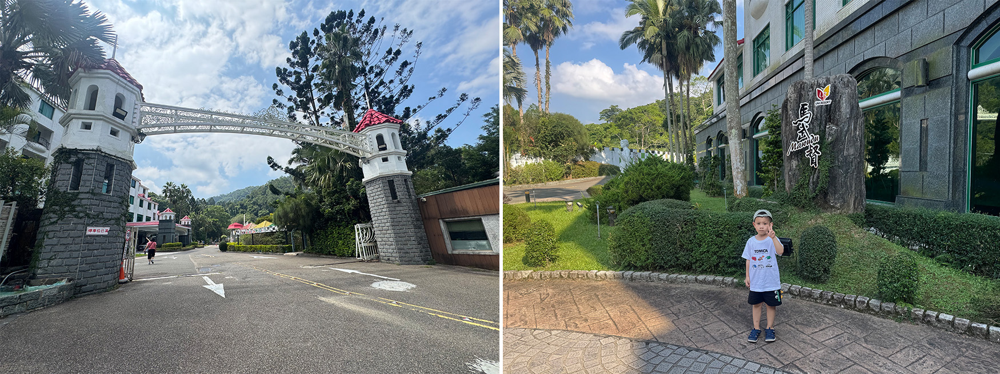
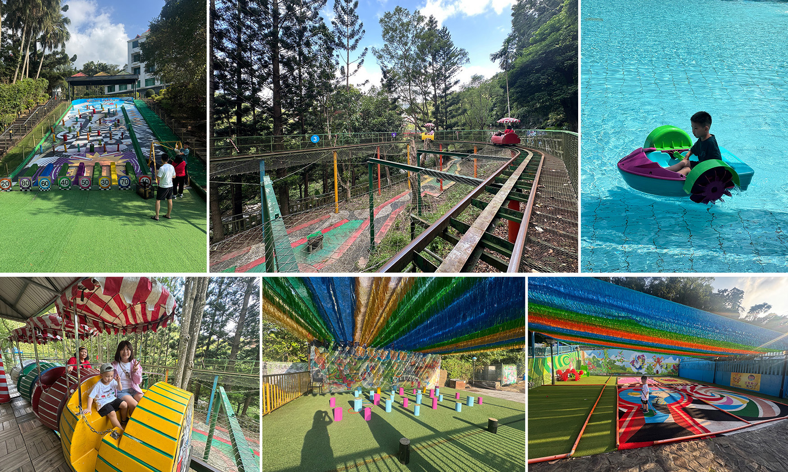
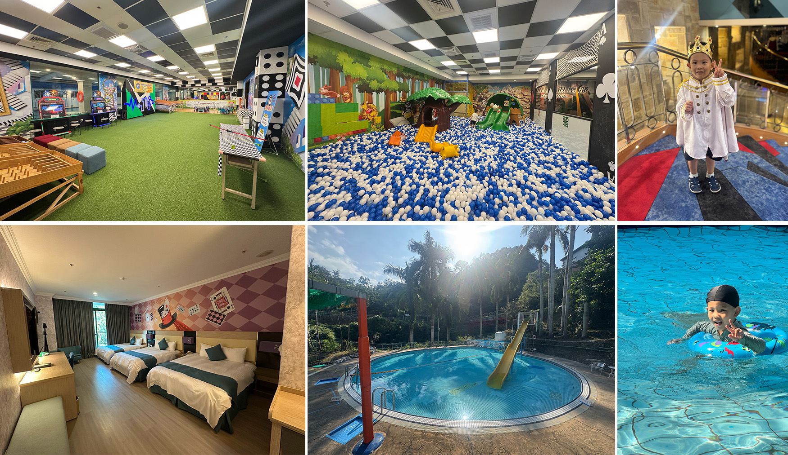

有了小孩之後，我越來越喜歡選擇「吃喝玩樂都在飯店裡」的複合式住宿。對爸媽來說，不用煩惱下一站要去哪裡、三餐要吃什麼，小孩又能從早玩到晚，真的就是最省心的懶人旅行！
 |
這次我們來到新竹關西的統一渡假村馬武督渡假會議中心，沒想到園區裡的設施比想像中還豐富，大人小孩都玩得超開心。
第一天入住前就能先寄放行李、開始玩設施。飯店會提供闖關卡，園區共有 12 個遊戲關卡，分為室內、戶外兩大區域，天氣好就到戶外闖關，下雨也不用擔心，可以改玩室內設施。我們這次很幸運遇到好天氣，戶外、室內全部玩透透！
一入園先搭遊園列車，沿途聽工作人員介紹各個設施，其中最讓我們期待的就是有開放時間限制的「兒童手搖船」。果然一看到，小孩就迫不及待想玩。
第一站「JUMBO 彈珠王」是超大型彈珠台，要把球打進不同分數的欄位，雖然有點難度，但有三次機會，小孩負責擺球、大人負責使力槌球，一起合作闖關也很有趣。
 |
接著就是小孩最喜歡的兒童手搖船，連大人看了都忍不住想坐。還有需要踩腳踏車前進的「魔法車站」、巨大籃球、大腳足球、射箭、綠野滑草等設施，每一關都充滿驚喜。
最後一區還有套圈圈、拋球、翻牌對對碰及小型高爾夫球場，全部闖完，小孩竟然還意猶未盡，馬上拉著我們繼續挑戰室內遊戲區！
室內也完全不無聊，有大型木製彈珠台、風火輪電流急急棒、DoReMi 足踏琴、球池，還有 Switch 遊戲專區及室內游泳池。最特別的是還可以租借大人、小孩的特色服裝拍照，指定時間前拍好照片，隔天退房前就能拿到沖洗好的照片，留下這趟旅行的紀念，真的很貼心。
 |
玩了一整天，晚餐直接在飯店裡解決，吃飽後還能繼續玩，完全不用再開車外出覓食。
這次我們原本入住四人房，還幸運升等成六人房，房內有三張雙人床，空間非常寬敞，浴室也很大，住起來相當舒服。
第二天吃完早餐，再到室內游泳池玩水。泳池貼心分成游泳區與兒童戲水區，小朋友可以在安全的兒童區盡情玩水，也能和飯店櫃檯租借泳具。
兩天一夜下來，我最大的感想就是：「原來帶小孩旅行，也可以這麼輕鬆！」不用一直趕行程、不用煩惱交通和用餐，小孩玩得開心，大人也能真正放鬆。
如果你也喜歡不用排行程、希望一家大小都能玩得盡興的「懶人旅行」，統一馬武督渡假會議中心真的很適合親子家庭！